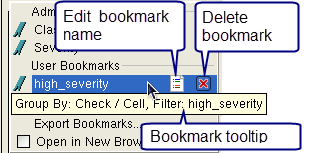
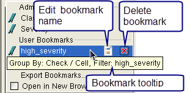

Creating and Managing User Bookmarks in Calibre RVE for DRC
You use the Bookmarks menu to create and
delete user bookmarks and change the bookmark name. Bookmarks save
the view options for the result tab so that you can easily return
to a previous view for a debug session. A bookmark saves information
such as the applied result filter, the Group By setting, the column selections,
and more.
Prerequisites
A results database is open in Calibre RVE for DRC. See “Starting Calibre RVE” and “Working with Results in Calibre RVE for DRC”.
Procedure
- Create a user bookmark as
follows:
- Set up the view as desired.
- Click the Bookmarks icon (
 ) and
choose the Add Bookmark menu item.
) and
choose the Add Bookmark menu item. - Enter a bookmark name in the Add Bookmark dialog box.
- (Optional) Enable “Auto Open” to have this view automatically applied when a results database is opened. The bookmarked view is only applied the first time a database is opened—after that the Calibre RVE session is restored to the most recent view configuration and settings for that database.
- Click OK.
The bookmark is added to the User Bookmarks section in the Bookmarks menu.
User bookmarks are automatically saved in a configuration file associated with the results database. The configuration file is saved in the $HOME/.rve/dbOptions directory.
- To change the bookmark name,
click the Bookmarks icon
to display the menu and hover over the bookmark name. Click the Edit button
(
 ), as shown in Figure 1. This opens a dialog box to change
the bookmark name.Figure 1. Manage User Bookmarks in Calibre RVE for DRC
), as shown in Figure 1. This opens a dialog box to change
the bookmark name.Figure 1. Manage User Bookmarks in Calibre RVE for DRC